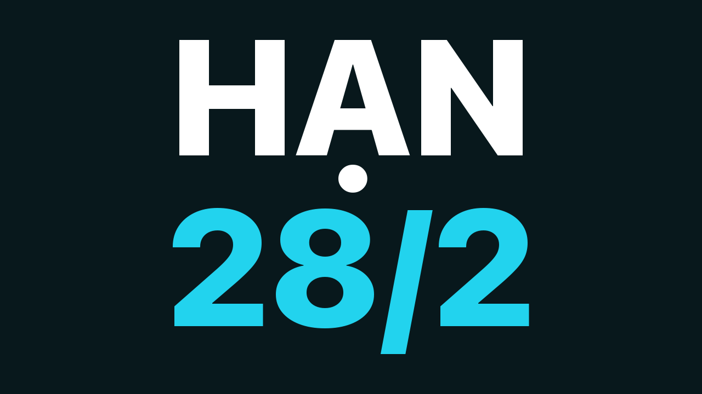

Duyệt 2 · 2026-11-10-phim-lau-thue
2 cảnh báo
- Cảnh báo: 12 hiệu ứng âm thanh/phút, chuẩn ≥ 15
- Cảnh báo: độ khô: 1 cảnh lặp hình chính trong cửa sổ 8 cảnh
Video
Tiêu đề + thumbnail
Phương án 1

Web phim lậu dính gì đến thuế hàng Việt?
Phương án 2
Mỹ gia hạn 3 tháng: Hàng Việt có lo?
Phương án 3
Mỹ dời hạn điều tra tới 28/2: phim lậu liên quan gì thuế?
Shorts
Mô tả
Mỹ vừa gia hạn thêm ba tháng vụ điều tra sở hữu trí tuệ ở Việt Nam, hạn ra quyết định chậm nhất là 28/02/2027. Vậy web phim lậu liên quan gì đến thuế của một lô hàng ở cảng? Video đọc thẳng các văn bản gốc: điều luật nào nối hai chuyện, mức thuế 12,5% thuộc hồ sơ nào, và hai tín hiệu đáng theo dõi tiếp theo. ⏱ Mốc chương 00:00 Từ nút phát đến cửa khẩu 00:31 Vì sao nói tới phim lậu? 02:18 Vì sao một lô hàng liên quan? 04:35 Hai hồ sơ cùng tên điều luật 06:06 Hai tín hiệu cần theo dõi 07:27 Web phim lậu dính gì tới thuế? 📌 Cần biết - Hiện chưa có quyết định áp thuế nào trong vụ điều tra bản quyền này. Điều luật chỉ cho phép Mỹ chọn biện pháp, kể cả với hàng hóa ngoài vụ việc; video không dự báo kết quả. - Mức thuế 12,5% thuộc một hồ sơ khác (vụ lao động cưỡng bức), kèm ngoại lệ trong phụ lục. - Số hơn 6,7 tỷ lượt truy cập là số liệu của Liên minh Sáng tạo và Giải trí (ACE) về mạng Fmovies và các tên miền liên quan trong giai đoạn 01/2023–06/2024, tính lượt truy cập chứ không phải số vé bị mất. - Ví dụ tai nghe, đơn hàng nội thất và hai email là ví dụ giả định; sơ đồ ba lớp người xem, trang phát, nơi lưu video là minh họa cấu trúc, không mô tả một trang cụ thể. - Video không phải tư vấn pháp lý hay tư vấn thuế. 📎 Nguồn - USTR · Gia hạn: https://public-inspection.federalregister.gov/2026-22868.pdf (truy cập 10/11/2026) - USTR · Mở điều tra: https://ustr.gov/sites/default/files/files/Press/Releases/2026/USTR%20301%20Vietnam%20IP%20FRN.pdf (truy cập 10/11/2026) - Bộ luật Hoa Kỳ: https://uscode.house.gov/us/usc/119-118/t19/s2411/ (truy cập 10/11/2026) - ACE: https://www.alliance4creativity.com/news/vietnamese-authorities-with-support-from-ace-take-down-worlds-largest-piracy-ring/ (truy cập 10/11/2026) - U.S. Census Bureau / BEA: https://www.bea.gov/sites/default/files/2026-11/trad0926.pdf#page=28 (truy cập 10/11/2026) - USTR · Vụ lao động cưỡng bức: https://public-inspection.federalregister.gov/2026-15181.pdf (truy cập 10/11/2026)
Tags
phim lậu, thuế hàng Việt, Mỹ điều tra Việt Nam, Điều 301, USTR, bản quyền, thuế nhập khẩu Mỹ, xuất khẩu Việt Nam, thuế 12,5%, Fmovies, điều tra sở hữu trí tuệ, Túi Tiền Người Việt